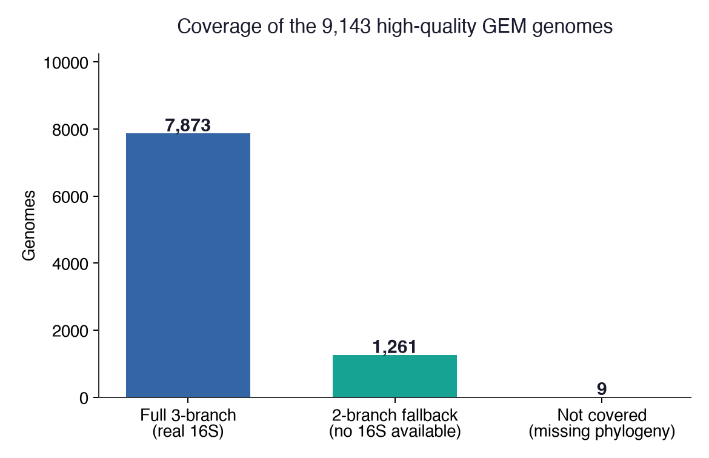
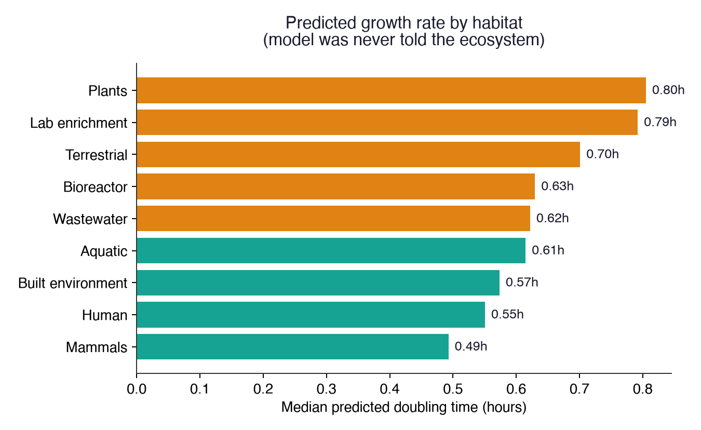
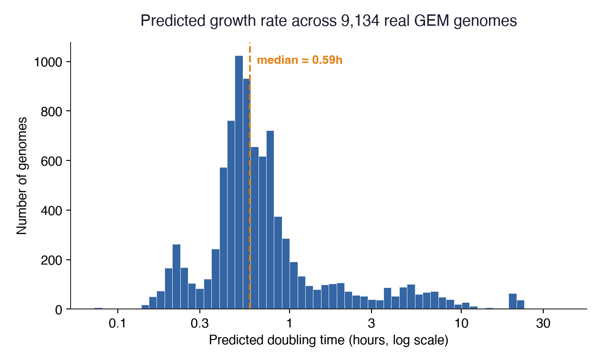
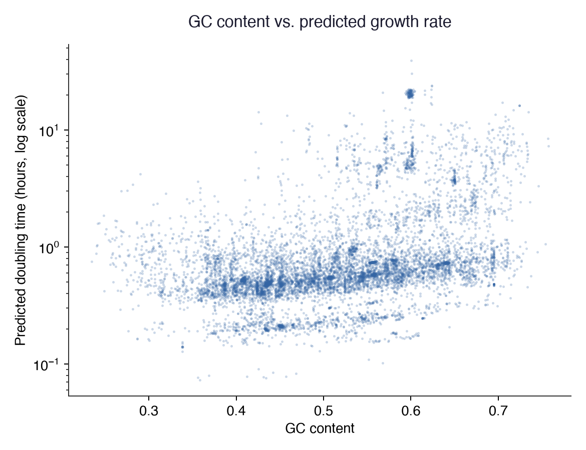

You asked for predicted growth rates on the high quality GEM genomes, about 9,000 of them, genomes that have never had a growth rate measured in a lab. This report covers that work: how we picked the genomes, how the prediction works, what came out of it, and where it is still weak.
The GEM catalog grades every genome it holds using a standard called MIMAG, which sorts genomes into high quality, medium quality, or lower, based on how complete and clean the assembly is. We filtered the whole catalog down to the genomes marked high quality. That gave us 9,143 genomes, close to the "about 9,000 to 10,000" you asked about, so this should be the right set.
Of those 9,143 genomes, we were able to produce a prediction for 9,134 of them. That is 99.9 percent.
For each genome, three things are pulled straight from its DNA sequence:
A model was trained on 304 real species that already have a published, measured growth rate. That trained model was then run on every genome in the high quality GEM set, one at a time, and it produces one number per genome: the predicted doubling time in hours, meaning how long it would take that organism to double in population.
Not every genome had all three pieces of information. 7,873 genomes had a usable 16S gene and got the full prediction. 1,261 genomes did not have a usable 16S gene in their assembly, which happens with real genomes pulled from the environment and is not something we did wrong, so those were predicted using just the genome traits and the tree of life position instead. Only 9 genomes out of the whole set could not be scored at all.

How many of the 9,143 genomes fell into each group.
The model was never told what environment any genome came from. It only ever looks at DNA sequence. When the 9,134 predictions are grouped by where each genome was actually collected, human and animal associated genomes come out predicted as the fastest growers, and soil and plant associated genomes come out predicted as the slowest. That is the correct pattern. It matches what is already known about these organisms, and the model arrived at it on its own, from sequence alone.

Median predicted doubling time by where the genome was collected. Fastest at the bottom, slowest at the top.

Most genomes are predicted to double in under an hour, with a smaller number predicted much slower. This is the shape you would expect from a real, mixed environmental sample rather than a hand picked lab collection.
The five fastest predicted genomes:
| Genome ID | Predicted doubling time | Where it was collected |
|---|---|---|
| 3300029771_7 | 0.07 hours | Human feces |
| 3300028983_3 | 0.08 hours | Human host associated |
| 3300029132_4 | 0.08 hours | Host associated |
| 3300014529_9 | 0.08 hours | Human host associated |
| 3300014522_4 | 0.08 hours | Human host associated |
The five slowest predicted genomes:
| Genome ID | Predicted doubling time | Where it was collected |
|---|---|---|
| 3300029610_25 | 39.3 hours | Human fecal |
| 3300011602_6 | 30.4 hours | City subway, metal or plastic surface |
| 3300029656_20 | 24.0 hours | Human fecal |
| 3300029754_19 | 23.7 hours | Human feces |
| 3300029374_18 | 22.5 hours | Human feces |
The full lists of the ten fastest and ten slowest are included as separate files, fastest10.csv and slowest10.csv, alongside this report.

Genomes with higher GC content tend to get a slower prediction. This lines up with what other studies have found, so it is not something the model invented on its own.
Two honest problems, stated plainly rather than left out.
The exact numbers are not very accurate yet. When the model is tested carefully on species where we already know the real answer, it often does no better than simply guessing the average growth rate for everything. It is better at roughly ranking organisms from fast to slow than at getting one exact number right for any single genome. The predictions here should be read as a rough ordering, not as a lab measurement.
The model can be confidently wrong on genomes unlike anything it learned from. A small group of genomes with high GC content and a smallish genome got predicted as very slow growers, even though most of them came from the human gut, where fast growth is normal. We looked into why. Every one of the 304 training species that looks similar on paper, high GC and a small genome, happens to be a heat loving organism, because those are the ones that have been measured and published. The model has never seen an ordinary fast growing high GC organism, so it falls back on the only similar examples it has, which are heat lovers. This is a real gap in the training data, not a mistake in the code, and it will not be fixed by more computer time. It needs more real, measured species to train on.
The project is moving into a phase focused specifically on closing the accuracy gap described above, rather than expanding coverage further. That work is being tracked separately and will be reported on once there is something real to show, not before.
Full predictions for all 9,134 genomes are in unlabeled_predictions_hq.csv in this same folder, one row per genome. The branches_used column tells you whether that genome got the full prediction, using real 16S data, or the fallback version without it.